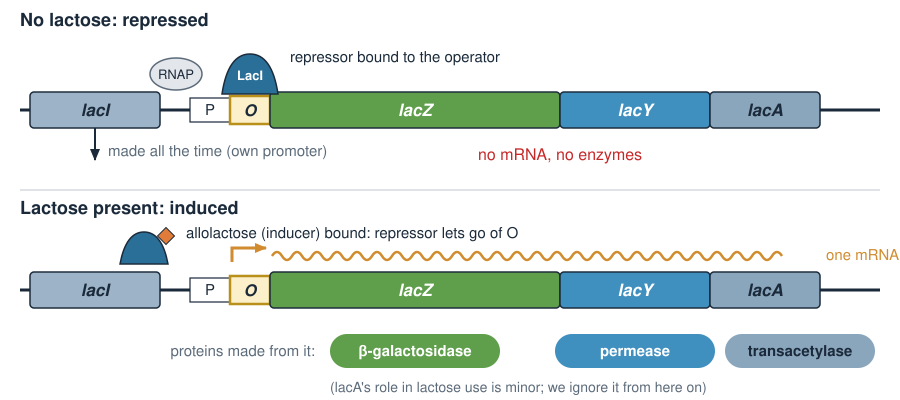
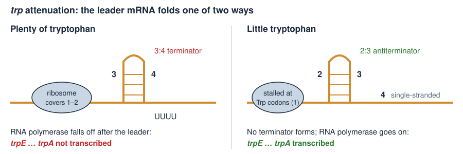

Part 6: Gene regulation & development. The lac operon as an example of genetic analysis
Basic and molecular genetics (5MO104)
About this lecture
Recap from 5MO103. You have met the lac operon in Microbiology and basic molecular biology: a repressor, an operator, three genes, and lactose as the switch. Today we look at it as geneticists. Jacob and Monod worked out the model in 1961 from mutants, before anyone had purified the repressor or sequenced the operator.
The mutant classes: constitutive (I−, Oc) and uninducible (Is).
Merodiploids (partial diploids made with an F′ plasmid) to test dominance.
Cis vs trans: a mutation that acts in trans changes a diffusible product (a protein); one that acts only in cis changes a site on the DNA.
Complementation between lacZ− and lacY−.
Briefly: attenuation of the trp operon.
Book: Hartwell, Genetics: From Genes to Genomes, the chapter on gene regulation in prokaryotes.
The lac operon in one picture

lacZ (β-galactosidase), lacY (permease) and lacA are transcribed together, as one mRNA, from one promoter (P).
The repressor (LacI) is made all the time from its own gene. It binds the operator (O) and blocks transcription.
The inducer (allolactose, made from lactose; or IPTG in the lab) binds the repressor, which then lets go of O.
Jacob & Monod: hunting for regulatory mutants
Screen E. coli on indicator plates (e.g. X-gal, which turns blue when β-galactosidase cuts it), with and without inducer. Two odd kinds of mutants stood out:
Phenotype
What it means
Mutations found
Constitutive
enzymes made with or without inducer
lacI− (no working repressor); lacOc (operator that repressor cannot bind)
Uninducible
enzymes never made, although lacZ and lacY are intact
lacIs (“super-repressor”: cannot bind inducer)
Structural
one enzyme missing, regulation normal
lacZ−, lacY−
Both lacI− and lacOc give the same phenotype in a haploid cell. How can you tell them apart? You need a second copy of the operon in the same cell.
Merodiploids: a second copy on an F′
An F′ plasmid is an F factor that has picked up a piece of the chromosome (here the lac region). Transfer it by conjugation into a recipient, and the cell has two copies of the lac genes: a partial diploid, or merodiploid.
Now you can ask the questions from Part 1 and Part 3:
Dominance: in I+/I−, which phenotype wins? (Extensions to Mendel)
Complementation: do two mutations on different copies restore the wild type? (Mutation unit)
Cis vs trans: does the mutation affect only the genes on its own DNA molecule, or both copies?
Cis vs trans: the two decisive merodiploids
A. F′ I+ / I− is inducible: I+ is dominant and works on both copies. The lacI product diffuses: it is a protein.
B. F′ O+Z+ / OcZ− is inducible for β-gal: the Oc mutation only affects the lacZ next to it. lacO is a DNA site.
The super-repressor Is and the full logic
Is makes a repressor that binds the operator but not the inducer. In F′ I+ / Is, the Is repressor sits on both operators: Is is dominant, in trans. Only an Oc in cis can escape it.
Strain (F′ / chromosome)
β-gal
permease
Conclusion
I+ (haploid)
inducible
inducible
wild type
I− (haploid)
constitutive
constitutive
repressor needed to turn genes off
F′ I+ / I−
inducible
inducible
I+ dominant, acts in trans
F′ I+ / Is
none
none
Is dominant, acts in trans
F′ I+Oc / IsO+
constitutive
constitutive
Oc escapes even Is, in cis
F′ O+Z+ / OcZ−
inducible
constitutive
Oc acts only in cis
F′ Z+Y− / Z−Y+
inducible
inducible
Z and Y complement
Rule: a mutation that is dominant in trans changes a diffusible product; one that acts only in cis changes a DNA site.
Try it: lac merodiploids
Complementation in the operon
F′ Z+Y− / Z−Y+: each copy makes the protein the other cannot. The cell has both enzymes, inducibly. So lacZ and lacY are different genes, even though they share one promoter and one mRNA.
This is the complementation test from the Mutation unit (Part 3), done in a bacterium.
Benzer called the unit defined by the cis–trans test a cistron. In modern words: a gene that encodes one polypeptide.
Caveat: polarity. A nonsense mutation early in lacZ also lowers lacY expression from that copy (transcription and translation are coupled in bacteria). Such polar mutations can fail to complement lacY− although the lacY gene itself is fine.
A second way to switch: trp attenuation

The trp operon (tryptophan synthesis) has a repressor too (TrpR, active with tryptophan). On top of that, the leader mRNA senses tryptophan through translation of a short leader peptide with two Trp codons. Deletions of the attenuator region raise trp expression even with the repressor working: another cis-acting site.
Summary
Concept
Key fact
Operon
several genes, one promoter, one mRNA; lacZ, lacY, lacA
Negative control
LacI repressor binds lacO; inducer releases it
Constitutive mutants
I− (no repressor), Oc (operator cannot bind repressor)
Uninducible mutant
Is (repressor cannot bind inducer)
Merodiploid
F′ / chromosome; a partial diploid to test dominance
Trans-acting
I+ over I−, and Is over I+: the gene makes a diffusible protein
Cis-acting
Oc affects only genes on its own DNA molecule: a DNA site
Complementation
Z− and Y− on different copies give both enzymes (watch out for polarity)
Attenuation
trp leader hairpins; ribosome stalling on Trp codons decides termination
Where this leads
Next: Eukaryotic regulation & epigenetics. Enhancers and promoters are cis-acting elements, and transcription factors are trans-acting proteins, the same logic as lacO and lacI. Chromatin adds a layer that bacteria do not have.
RNA-mediated regulation. Small RNAs that turn genes down after transcription, discovered, like the lac mutants, through a genetic screen.
Development & model organisms. Mutant screens like Jacob and Monod’s, scaled up to find the genes that build an embryo.